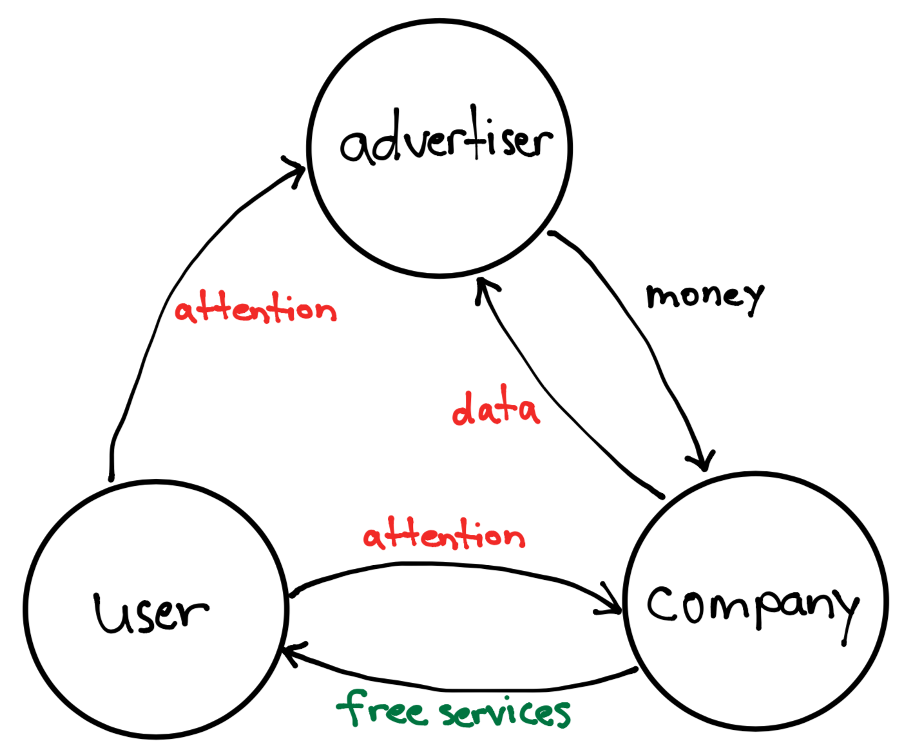

Think about everything you use that’s free.
Google, Facebook, Twitter, maybe Spotify, and a handful of articles from the New York Times. It’s hard to get people to spend money. If we can conveniently get something for free, we’ll take it. Behind each free service we use lies advertising, the key revenue generator of the internet.
At this point, advertisements have become second nature. Want to watch a video on Youtube? Wait five seconds before you can watch. Listening to music on Spotify? Prepare to be bombarded by ads telling you to upgrade. Digital advertising generates a lot of money. It’s a $129 billion market, with Facebook and Google gobbling up 59% of that capital. Starting with the early dot-com companies like Yahoo! and AOL, advertising has been the de facto way to monetize the internet.
But is advertising really the only way to make money on the internet?
In this three part series, I will address the need to find a new way to monetize the internet. I’ll start with the the broken incentives of advertising and how this business model both hurts the user and stifles innovation. In part two, I will present an alternative business model to advertising and demonstrate how it addresses the shortcomings of advertising. I will conclude in part three by connecting this new business model to the blockchain and how it can help push the creation of a trustless, decentralized network.
The Incentives Behind Advertising
Incentives drive decisions, and the incentives of advertising are inherently broken. Advertisements incentivize companies to maximize our attention on their platform. That’s why Youtube recommends increasingly extreme content after each video, or Snapchat’s Discover feature is littered with click-bait articles. More attention generates more data, which at scale, generates better, more targeted ads. It’s the cycle that monetizes the internet today.
Attention is the currency of the internet. Advertising is the broker of attention for services, and the goal of the broker is to get the best exchange rate between attention and services. The exchange looks like this:

Unfortunately, our attention is finite. The growing abundance of content on the internet has reframed the problem of content consumption from “Is there anything to allocate my attention to?” to “What should I allocate my attention to?”. Examining advertisements’ click-through rates is indicative of this shift. In the early 2000s, the first banner ads had click through rates upwards of 70%. We just wanted to find another thing to peruse on the internet. Nowadays, only the best banner ads have a click through rate of 0.5%.
The incentives of companies providing free services no longer align with the best interests of the user. Generally, we assume companies create products with the best interests of the consumer in mind. However, in the advertising business model, users are no longer the consumer; they are the product. And companies are becoming more and more skilled at making us into an attractive product for their real customers: advertisers.
Unquenchable Thirst for Data
What’s wrong with companies directing our attention? We get free stuff that we normally would have to pay for, and most of the time we enjoy the recommended content and ignore most of the ads. But when 40 to 45 percent of your daily decisions are habits, scrolling another time down your Twitter feed or clicking on the next recommended video on Youtube is more than just your decision; it’s a decision dictated by companies that want your attention.
To make you feel like you’re making your own decisions, companies leverage data to learn everything they can about you. These companies know what make you click. Even as I write this post, I have urges to check Twitter or scroll through Reddit. Watching one Youtube video of basketball highlights leads me to five more about Lavar Ball and his antics. The more companies know about you - personality, interests, career, entertainment habits - the more they can predict what you want, when you want it. James Clear says it best in his book Atomic Habits:
It is human nature to follow the Law of Least Effort, which states that when deciding between two similar options, people will naturally gravitate toward the option that requires the least amount of work.
If the recommended video is exactly what peaks your interest, you’re probably going to watch that (low effort) rather than spend time doing your overdue tax returns (high effort). Data has allowed companies to hack our decision making framework, leading us to make decisions that we don’t normally make.
This hunger for data results from the incentive structure behind advertising. Advertisements generate revenue but need attention, and to capture your attention even better, companies need data. Yuval Noah Harai, historian and author of the book Sapiens, describes how much brainpower we’ve given this problem and its unintended consequences in a WIRED interview:
You had the brightest people in the world, 10 or 20 years ago, cracking this problem of, “How do I get people to click on ads?”. Some of the smartest people ever, this was their job, to solve this problem. And they solved it. And then the methods that they initially used to sell us underwear and sunglasses and vacations in the Caribbean and things like that, they were hijacked and weaponized, and are now used to sell us all kinds of things, including political opinions and entire ideologies.
We’re now left playing a losing game against supercomputers and algorithms that know you better than you know yourself. The supercomputer is backed by every datapoint detailing your every move, and it’s only going to get smarter.
Barriers to Entry
Ben Thompson often highlights how most recent internet innovations have shifted from consumer technology to enterprise software. The business model for enterprise software is clear: sell software as a service to deep-pocketed companies.
As we’ve discussed, the business model for consumer technology is clear as well: provide free services powered by ads or alternatively, charge a monthly fee for services. Most consumer technology companies, from mass media companies like The New York Times, to music streaming services like Spotify and Pandora, to social networks like Twitter and Snapchat, follow one or both of these models. Let’s take a look at some of our favorite internet companies today and see how much of their revenue is from one of these two sources.

When your only two options to generate revenue are advertising or a subscription service, getting a small project off the ground becomes difficult without the backing of venture capital money. Small projects do not generate enough web traffic for ads to make sense, and it’s hard to market a genuine brand when your website is littered with banner ads. Small projects also don’t have the reputation to charge a subscription service. I would pay $10 a month for Stratechery, long established as one of the best tech analysis blogs on the internet, but I wouldn’t pay $1 a month for a blog that just started. Even established media companies are struggling, with subscription revenue from 2000 to 2017 stagnating around $11 billion dollars, but ad revenue declining from $48.7 billion to $16.5 billion.
If we want to spark new innovation on the consumer technology side and make journalism a sustainable endeavor, we need a revenue generator that scales linearly with engagement. We’ll build off of this idea in our next post as we explore an alternative business model.
Since the dawn of the internet, advertising has been the primary means of monetization. While it may have been pivotal in creating many free services we enjoy, the incentives behind advertising and the best interests of the user have slowly diverged. To summarize:
- Advertisements incentivize companies to direct our attention away from content we care about.
- To direct attention to their platforms, companies need large amounts of data and will go to increasingly extreme measures to get it.
- Advertising is hard, because it requires both scale and infrastructure, making it difficult for small, potentially innovative projects to generate revenue.
In Part 2, we will go back to the first principles of generating revenue on the internet to address the shortfalls of advertising and build a new business model for the internet.
References
Facebook Users Still Don’t Know How Facebook Works
Facebook’s Illusion of Control over Location-Related Ad Targeting
When Tech Knows You Better Than You Know Yourself
I'd love to hear from you!
If you'd like to share your thoughts about my post, feel free to email me at lifeinbytes@kevinarifin.com or send me a DM on Twitter. I also send out my Thought Bytes newsletter every Thursday if you want more content like this! You can subscribe here.